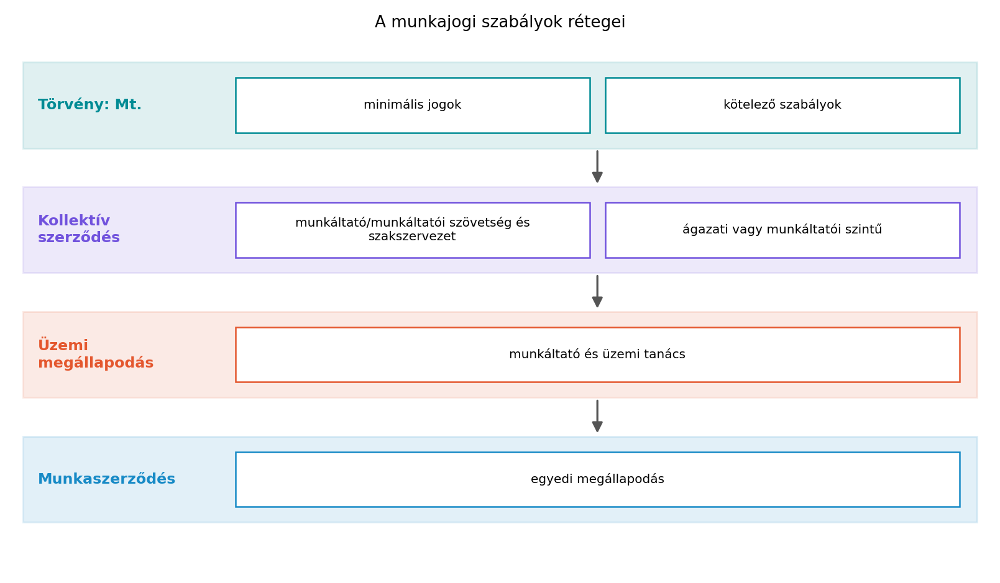

Este 8 óra van, a pékségben indul az éjszakai műszak. A pék aláírta a munkaszerződését, de nem nézte meg, mi áll benne az éjszakai pótlékról. Amikor kézhez kapja a bérjegyzékét, kevesebb a fizetés, mint amire számított. Ebben az alfejezetben megtanulod, milyen jogforrások szabályozzák a munkaviszonyt, mit kell tartalmaznia a munkaszerződésnek, és hogyan kell kiszámítani az éjszakai pótlékot egyszerű pékségi példán.
A munkajogi szabályok egymásra épülnek. A legmagasabb szinten a törvény áll, alatta a pékségnél érvényes kollektív szerződés vagy üzemi megállapodás, legalul pedig a te egyedi munkaszerződésed. A munkaszerződés nem lehet ellentétes a magasabb szintű szabályokkal, tehát ha a törvény legalább 15% éjszakai pótlékot ír elő, a munkaszerződés nem mondhat kevesebbet.

A rétegek azt fejezik ki, hogy a munkáltató és a munkavállaló egyedi megállapodása csak akkor érvényes, ha megfelel a felsőbb szintű szabályoknak.
Definíció. A munkaviszony a munkáltató és a munkavállaló között létrejövő jogviszony, amelyben a munkavállaló a munkáltató irányítása alatt, személyesen, díjazás ellenében végez munkát.
A munkaviszony legfontosabb jellemzője, hogy a munkavállaló nem önállóan szervezi a munkáját, hanem a munkáltató utasításai szerint dolgozik. A pékségben ez azt jelenti, hogy a pék a műszakvezető vagy a munkáltató által meghatározott időben, helyen és módon készíti a tésztát, kezeli a kemencét, csomagolja a terméket.
Szabály. A munkaviszonyt elsősorban a munka törvénykönyvéről szóló 2012. évi I. törvény (Mt.) szabályozza. Ezen kívül a munkaviszonyra vonatkozó szabályokat tartalmazhat:
Előírás. A munkaviszonyra vonatkozó jogok és kötelezettségek legalapvetőbb szabályait a munka törvénykönyve (2012. évi I. törvény, Mt.) tartalmazza. A törvény pontos szakaszai, a hatályos szöveg és a későbbi módosítások mindig aktuálisan ellenőrizendők. (ellenőrizendő: hatályos Mt. szövege)
A munkaviszony alanyai:
A pékségben a munkáltató lehet egyéni vállalkozó, betéti társaság vagy korlátolt felelősségű társaság. A munkavállaló mindig konkrét ember, például a hétvégi műszakba beosztott pék.
Szabály. A munkaszerződést írásba kell foglalni, és annak egy példányát a munkavállalónak át kell adni; az írásba foglalás elmulasztására a munkavállaló hivatkozhat. (ellenőrizendő: Mt. munkaszerződésre vonatkozó szabályai)
A munkaszerződésben kötelezően meg kell állapodni az alapbérben és a munkakörben. A következő elemek rögzítése ajánlott, mert a vita elkerülését segíti:
Ha a munkavégzés helyét, a munkaviszony időtartamát vagy a munkaidő mértékét nem rögzítik, a törvényi főszabály érvényes (szokásos munkavégzési hely, határozatlan idő, teljes munkaidő) (ellenőrizendő: Mt.). A pék tanulónak ezért aláírás előtt mindig ellenőriznie kell, hogy a munkakör, a bér, a hely, az időtartam és a munkaidő pontosan szerepel-e.
Definíció. A próbaidő a munkaviszony létesítésekor kikötött időszak, amely alatt bármelyik fél azonnali hatállyal, indokolás nélkül megszüntetheti a munkaviszonyt. A próbaidő legfeljebb 3 hónap lehet; kollektív szerződés ennél hosszabb, legfeljebb 6 hónap próbaidőt is megállapíthat. (ellenőrizendő: Mt. próbaidő szabály)
Szabály. A munkaviszony lehet határozatlan idejű vagy határozott idejű. A határozott idejű munkaviszony legfeljebb 5 évre létesíthető, és hosszabbítása esetén az együttes időtartam nem haladhatja meg az 5 évet. (ellenőrizendő: Mt. határozott idejű munkaviszonyra vonatkozó szabály)
A pékségekben jellemző a határozatlan idejű munkaviszony, de szezonális termékeknél (például karácsonyi mézeskalács gyártás) határozott idejű szerződést is köthetnek.
A munkaviszonyban a feleknek egymással szemben jogai és kötelezettségei vannak.
A munkáltató fő kötelezettségei:
A munkáltató fő jogai:
A munkavállaló fő kötelezettségei:
A munkavállaló fő jogai:
Szabály. A felek kártérítési felelősséggel tartoznak egymásnak. A munkavállaló a munkaviszonyából eredő kötelezettsége megszegésével okozott kárért felel: gondatlan károkozásnál korlátozott mértékben (ellenőrizendő: a törvényi felső határ), szándékos vagy súlyosan gondatlan károkozásnál a teljes kárért. A munkáltató a munkavállalónak okozott kárért felel. (ellenőrizendő: Mt. kártérítési felelősség szabályai)
Figyelem. A pékségben a sérült gépen, kikapcsolás nélküli tisztítás során keletkező baleset munkaügyi és munkavédelmi szempontból is súlyos következménnyel jár. A védőberendezés kiiktatása a munkavállaló munkavédelmi kötelezettségének megszegését is jelenti.
Szabály. Az általános teljes munkaidő napi 8 óra, heti 40 óra. A munkáltató a munkaidőt munkaidőkeretben is beoszthatja, ami azt jelenti, hogy egyes napokon több, más napokon kevesebb munkaidő is lehet, de a keret átlagában a heti munkaidő nem haladhatja meg a törvényes mértéket. (ellenőrizendő: Mt. munkaidő szabályai)
A pékségekben a reggelre kért friss áru miatt gyakori az éjszakai, hajnali munka, a munkaidőkeret és a rendes munkaidőtől eltérő beosztás; a hűtő-kelesztéses (késleltetett) technológia az éjszakai munka egy részét nappalra helyezheti át.
Szabály. A munkaközi szünet nem része a munkaidőnek. Ha a beosztás szerinti napi munkaidő a 6 órát meghaladja, legalább 20 perc, 9 óra felett további 25 perc szünet jár. (ellenőrizendő: Mt. munkaközi szünetre vonatkozó szabálya)
Definíció. A napi pihenőidő a napi munka befejezése és a másnapi munka megkezdése közötti megszakítás, amelynek legalább 11 órának kell lennie. A heti pihenőnap a hét azon napja, amelyen a munkavállaló nem végez munkát; a munkavállalót hetente két pihenőnap illeti meg, ehelyett legalább 48 órás, megszakítás nélküli heti pihenőidő is beosztható. (ellenőrizendő: hatályos Mt. pihenőnapra és heti pihenőidőre vonatkozó szabályai)
Definíció. Éjszakai munka a 22 és 6 óra közötti időszakban végzett munka. A pékségekben a hajnali műszak éjszakai munkának minősül, ha a munkaidő beleesik ebbe az időszakba.
Szabály. Az éjszakai munkavégzés után a munkavállalót éjszakai pótlék illeti meg, amelynek mértéke az alapbérre vetítve 15%. (ellenőrizendő: Mt. bérpótlék szabályai)
Előírás. Műszakpótlék (tanulási példa: 30%, ellenőrizendő: Mt.) a több műszakos vagy megszakítás nélküli beosztásban a 18 és 6 óra közötti munkára jár; ilyenkor éjszakai pótlék nem jár. Az éjszakai pótlék (15%) annak jár, aki nem kap műszakpótlékot, és az éjszakai munka az egy órát meghaladja (ellenőrizendő: Mt. bérpótlék-szabályai; hogy a pékség beosztása műszakpótlékos-e, a munkaszerződés és a beosztás dönti el).
Előírás. Fiatal munkavállaló (18 év alatti) éjszakai munkára nem osztható be, és rá rövidebb napi munkaidő- és szünetszabályok vonatkoznak. A szakképzésben részt vevő tanuló gyakorlati képzésének időbeosztását a szakképzési jogszabályok és a szakképzési munkaszerződés korlátozzák; a hajnali kezdés tanulónál csak a jogszabályi kereten belül lehetséges (ellenőrizendő: Mt. fiatal munkavállalóra vonatkozó szabályai, 2019. évi LXXX. törvény a szakképzésről és végrehajtási rendelete).
Szabály. A rendkívüli munkavégzés (köznyelven túlóra) akkor állapítható meg, ha a munkavállaló a munkaidőkeret vagy a beosztás szerinti munkaidőn felül végez munkát. A rendkívüli munkavégzés után pótlék jár, amelynek mértéke általában 50%, de bizonyos esetekben magasabb. (ellenőrizendő: Mt. rendkívüli munkavégzés szabályai)
Szabály. A munkavállalónak évente alapszabadság jár, amelynek mértéke 20 munkanap. Az alapszabadság a 25. életévtől kezdve életkor szerint pótszabadsággal növekszik. (ellenőrizendő: Mt. szabadságszabályai)
A péknek a szabadságot a munkáltató adja ki, de a szabadság egy részét a munkavállaló kérésének megfelelően kell kiadni. A szabadság számítása naptári évre történik, és a munkában töltött idő alapján arányosítani kell, ha a munkaviszony nem tartott egész évben.
Példa. Egy 26 éves pék éves alapszabadsága 20 munkanap, és életkora alapján 1 nap pótszabadság jár neki. Az éves szabadsága 21 munkanap. (ellenőrizendő: a pótszabadság pontos mértéke)
A munkaviszony kétféle módon érhet véget: megszűnik, vagy megszüntetik.
Szabály. A munkaviszony megszűnik például:
Szabály. A munkaviszonyt megszüntetheti:
Szabály. A munkáltatói rendes felmondás esetén a munkáltatónak a felmondást indokolnia kell. A felmondás indoka például a munkavállaló munkaköréhez kapcsolódó képességbeli alkalmatlanság vagy a munkáltató működésével összefüggő létszámcsökkentés. A munkavállaló a határozatlan idejű munkaviszonyt indokolás nélkül felmondhatja.
Szabály. A felmondási idő legalább 30 nap, de a munkaviszonyban töltött időtől függően hosszabb lehet. A munkavállaló munkáltatói felmondás esetén a felmondási idő legalább felére fel kell menteni a munkavégzés alól. (ellenőrizendő: Mt. felmondási idő szabályai)
Szabály. A végkielégítés a munkavállalót a munkáltatói rendes felmondás vagy a munkáltató jogutód nélküli megszűnése esetén illeti meg, ha a munkaviszony legalább 3 évig fennállt. A végkielégítés mértéke a munkaviszony hosszától függ, és általában a távolléti díj 1–6 havi összege. (ellenőrizendő: Mt. végkielégítési szabályok)
Figyelem. A munkáltatói felmondásnak vannak korlátai is, például várandósság, szülési szabadság, betegség alatt a munkavállaló védelem alatt áll. A pék tanulónak nem kell jogásznak lennie, de a felmondás előtt érdemes megnézni, hogy jár-e végkielégítés, és a felmondási idő szabályos-e.
Adott: Egy pék havi alapbére 280 000 Ft (tanulási példa; a hatályos minimálbér és garantált bérminimum alá szerződés nem mehet – ellenőrizendő: az adott évi kormányrendelet). A munkaidő teljes, napi 8 óra. A pék egy éjszakai műszakban 20:00-tól 04:00-ig dolgozik (8 óra), amelyből 6 óra (22:00–04:00) a 22 és 6 óra közötti éjszakai időszakra esik.
Keresett: Mennyi éjszakai pótlék jár erre a napra?
Számítás. Először az órabért számítjuk ki. A havi alapbér órabérre történő átszámításánál az általános teljes napi munkaidő esetén 174 órával osztunk. (ellenőrizendő: Mt. órabér-számítási szabály)
Az éjszakai pótlék mértéke 15%:
A műszakban 6 óra éjszakai munka van:
Ellenőrzés. A pótlék nagyságrendje reális: egy órai pótlék körülbelül 241 Ft, így 6 órára körülbelül 1 450 Ft. Ha a pótlékot 8 órára számoltuk volna, az 1 931 Ft lenne, de a feladat szerint csak 6 óra esik éjszaka.
Adott: Ugyanez a pék a 20:00–04:00-s műszak után 04:00-tól 06:00-ig tovább dolgozik, mert a kenyeret át kell adni a szállítónak. Ez a 2 óra rendkívüli munkavégzés, amely szintén az éjszakai időszakra (22–6 óra) esik.
Keresett: Mennyi pótlék jár a 2 órára?
Számítás. A rendkívüli munkavégzés pótléka 50% (ellenőrizendő: Mt. rendkívüli pótlék szabály).
Az éjszakai pótlék is jár erre a 2 órára, mert az éjszakai időszakot érinti:
A kettő együtt 1 órára:
2 órára:
Ellenőrzés. A rendkívüli pótlék magasabb, mint az éjszakai pótlék. A két pótlék összeadódik: 50% + 15% = 65%: Ft/óra. Az alapbérrel együtt a rendkívüli éjszakai óra díjazása az órabér 1,65-szöröse. Ez megfelel a munkajogi logikának: a munkáltató a rendkívüli igénybevételt magasabb díjazással kompenzálja.
Valós eset. Egy pék szóban állapodott meg a munkáltatóval, hogy havi 300 000 Ft alapbért kap (tanulási példa; a hatályos minimálbér és garantált bérminimum alá szerződés nem mehet – ellenőrizendő: az adott évi kormányrendelet). A munkaszerződést azonban sietve írta alá, és csak később vette észre, hogy abban 250 000 Ft szerepel. A munkáltató a következő hónapban a szerződés szerinti alacsonyabb bért fizette. A pék vitatta, de a munkáltató a szerződésre hivatkozott.
Tanulság. A pék nem ellenőrizte a munkaszerződés tartalmát, és nem kért írásbeli igazolást a szóbeli ígéretről. A munkaviszonyban a munkaszerződés az elsődleges bizonyíték, ezért minden lényeges megállapodást írásban kell rögzíteni. A pék ezentúl a munkaszerződés minden sorát aláírás előtt elolvassa, és a bérrel kapcsolatos kérdéseket tisztázza.
Hiba. A munkaszerződést nem írják alá a felek. Ok: szóbeli megállapodás, későbbi vita. Helyes gyakorlat: mindig kérj írásba foglalt munkaszerződést, és tarts egy példányt belőle.
Hiba. A munkakör nincs pontosan meghatározva. Ok: a munkáltató később olyan feladatokat is elvár, amelyre a munkavállaló nem jelentkezett. Helyes gyakorlat: ellenőrizd, hogy a munkakör pontosan leírja a sütőipari feladatot (pék, segédmunkás, gépkezelő).
Hiba. A próbaidőt 6 hónapra kötik ki kollektív szerződés nélkül. Ok: a munkáltató visszaél a szabállyal. Helyes gyakorlat: tudnod kell, hogy a próbaidő legfeljebb 3 hónap, hacsak kollektív szerződés másként nem rendelkezik. (ellenőrizendő)
Hiba. A munkavállaló nem tudja, mennyi szabadság jár neki, ezért nem kéri ki. Ok: a munkáltató nem tájékoztat, a pék tájékozatlan. Helyes gyakorlat: számold ki az éves szabadságot, és jelezd a kérésed a munkaidő-beosztásnál.
1. feladat (A) Sorold fel a munkaviszony két alanyát, és mondd meg, mi jellemzi a munkavállaló helyzetét a munkaviszonyban.
2. feladat (A) Miben kell kötelezően megállapodni a munkaszerződésben, és mely további elemek rögzítése ajánlott? Nevezz meg legalább négy elemet összesen.
3. feladat (B) Anna pék havi alapbére 260 000 Ft (tanulási példa, ellenőrizendő: hatályos garantált bérminimum). Egy hajnali műszakban 8 órát dolgozik, amelyből 5 óra éjszakai időszakra esik. Számítsd ki az éjszakai pótlék összegét. (Az osztószám 174, a pótlék 15%.)
4. feladat (B) Béla pék 32 éves. Hány nap szabadság jár neki évente, ha az alapszabadság 20 munkanap, és életkor szerint pótszabadság jár? (A pótszabadság mértékét a feladatban jelöld: feltételezzük, hogy 32 évesen 3 nap. Ez ellenőrizendő.)
5. feladat (C) A munkáltató rendes felmondással megszünteti egy pék munkaviszonyát, aki 8 éve dolgozik a pékségben. Jár-e neki végkielégítés, és ha igen, milyen feltételekkel? Magyarázd el a végkielégítés feltételeit általánosan, és jelöld, hogy a pontos mértéket a munkaviszony hossza határozza meg.
6. feladat (D) Olvasd el a következő munkaszerződés-részletet, és keresd meg a hiányosságot: „A munkavállaló munkaköre: pék. A munkabér: 270 000 Ft/hó (tanulási példa, ellenőrizendő: hatályos garantált bérminimum). A munkavégzés helye: a munkáltató üzeme. A munkaviszony időtartama: határozatlan.” Mi hiányzik?
1. feladat megoldása. A munkaviszony alanyai a munkáltató és a munkavállaló. A munkavállaló a munkáltató irányítása alatt, személyesen végez munkát, és nem önállóan szervezi a munkáját.
2. feladat megoldása. Kötelező: munkakör és alapbér. Ajánlott még: munkavégzés helye, munkaviszony időtartama (ha határozott), munkaidő mértéke (ha eltér a teljes munkaidőtől); ezek hiányában a törvényi főszabály érvényes (ellenőrizendő: Mt.).
3. feladat megoldása.
Adott: havi alapbér 260 000 Ft, 5 óra éjszakai munka.
Keresett: éjszakai pótlék.
Órabér:
Éjszakai pótlék óránként:
5 órára:
Ellenőrzés. Az órabér nagyjából 1 500 Ft, a pótlék 224 Ft/óra, 5 órára 1 120 Ft, ami reális.
4. feladat megoldása.
A 32 éves pék alapszabadsága 20 munkanap. A feladatban megadott
pótszabadság 3 nap. Az éves szabadság 20 + 3 = 23 munkanap. (A pontos
pótszabadság mértéke a hatályos Mt. szerint ellenőrizendő.)
5. feladat megoldása.
A 8 éve foglalkoztatott péknek munkáltatói rendes felmondás esetén
járhat végkielégítés, mert a munkaviszony legalább 3 évig fennállt. A
végkielégítés feltétele, hogy a munkaviszony a munkáltató rendes
felmondásával vagy a munkáltató jogutód nélküli megszűnésével szűnjön
meg. A mérték a munkaviszony hosszától függ, ezért 8 év esetén a
törvényben meghatározott havi távolléti díj többszöröse. A pontos
mértéket a hatályos Mt. szabályozza. (ellenőrizendő)
6. feladat megoldása.
A kötelező elemek (munkakör, alapbér) szerepelnek, a munkavégzés helye
és az időtartam is. Hiányzik: a felek megnevezése és azonosító adatai, a
munkába lépés napja, a munkaidő mértéke (ha nincs megadva, teljes
munkaidő), a szerződés kelte és a felek aláírása. A pontos munkavégzési
cím megadása is ajánlott.
Ebben az alfejezetben a munkaviszony alapvető munkajogi kereteit tekintettük át. Megismertük a munkaviszony fogalmát: a munkavállaló a munkáltató irányítása alatt, személyesen, díjazás ellenében végez munkát. A munkaviszonyt a munka törvénykönyve (2012. évi I. törvény, Mt.) szabályozza, továbbá kollektív szerződés, üzemi megállapodás és a munkaszerződés. A munkaszerződést írásba kell foglalni; kötelezően az alapbérben és a munkakörben kell megállapodni, a munkavégzés helyét, az időtartamot és a munkaidő mértékét ajánlott rögzíteni, hiányukban a törvényi főszabály érvényes (ellenőrizendő: Mt.). A teljes munkaidő napi 8, heti 40 óra. Az éjszakai munka 22 és 6 óra közé esik, és 15% pótlék jár érte (ellenőrizendő). A szabadság alapmértéke 20 munkanap, amely életkor szerinti pótszabadsággal nő. A munkaviszony megszűnhet vagy megszüntethető; a munkáltatói rendes felmondás indokoláshoz kötött, a munkavállalói felmondás nem. Végkielégítés legalább 3 év munkaviszony után, munkáltatói rendes felmondás vagy munkáltató megszűnése esetén járhat. Ezeket a fogalmakat használjuk a Foglalkoztatási formák, adók, járulékok és iratok alfejezetben, amikor a munkaviszonytól eltérő foglalkoztatási formákat és a bérhez kapcsolódó levonásokat tárgyaljuk.